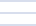

Infra
Watch
IP:
Online desde:
Status específico de servidor
Novo relatório
Uso atual CPU (%)
Status:
Uso atual RAM (%)
Uso de Disco (%)
disponível
Latência de rede
CPU (%)
RAM (%)
Disco (%)
Latência de rede (ms)
Histórico de status do servidor (24h)
Últimas 24h
Agora
Últimos incidentes
Componente
Registro
Parâmetro
Nível urgência
Descrição
Timestamp
Resolvido?